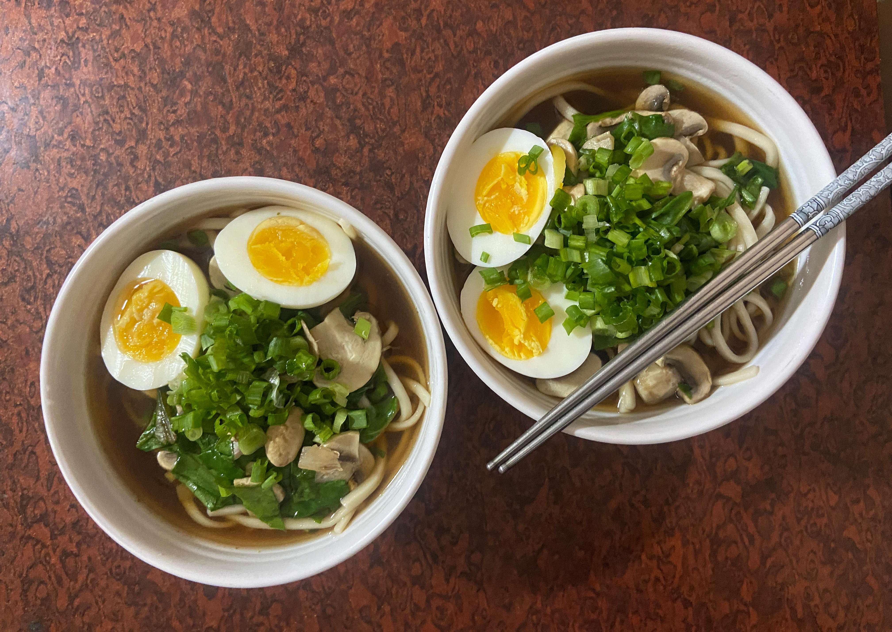

Miso Kake Udon with Egg

- Prepared: 24 March 2026
- Cuisine: Japanese 🇯🇵
- Difficulty: 🔥🔥🔥💧💧
- Servings: 2
🍜 Why I Made It
I always wanted to try a Japanese dish, but there's no such restaurant around my place where I can experience something close to authentic. When I found the udon noodles online, I couldn't help but order and try making this dish with mostly locally available ingredients here in India.
🛒 Ingredients
- 300g udon noodles
- 2 to 2.5 tbsp shio miso paste
- 3 cups (720 ml) water
- 1 full stock cube
- 2 tsp soy sauce
- ½ tsp sugar
- 150–200g mushrooms (sliced)
- Spinach (chopped into bite sized pieces)
- 2 boiled eggs
- 2–3 tbsp spring onions (chopped)
- A few drops of sesame oil
👨🍳 Method
-
Boil the egg first
Boil for 7 minutes, peel, and keep aside. -
Cook noodles
Boil udon noodles as per the packet, drain them, and give them a quick rinse under water. -
Build the broth
- Add water and stock cube to a pot and bring to a gentle simmer.
- Add soy sauce and a pinch of sugar.
- Take a ladle of hot broth in a bowl, dissolve miso paste in it, and pour back into the pot.
- Don't boil after adding miso as it kills flavor.
-
Add toppings
- Add sliced mushrooms and cook for 2-3 minutes.
- Add the spinach and let them blach for about 30-60 seconds.
-
Assemble
- Add noodles to the bowl.
- Pour hot broth and the toppings over.
- Add the halved egg, and garnish with spring onions and a few drops of sesame oil.
✅ What Went Well?
I don't like how my family prepares spinach by cooking it until it
becomes a complete slop. The taste is too strong, hence becoming
unpleasant for me. This dish recovered the reputation of spinach for me
as I totally loved the blanched spinach. It still has the spinach
taste, but mild, so I actually like it. It also retains its crunch
giving a contrasting texture to the chewy noodles.
Shio Miso gives the chicken-stock based dashi some necessary depth.
🔧 What I'd Change Next Time
I would use different protein. Chicken or Tofu would perhaps work well
with this dish.
I think I would perhaps like a cured egg (Ajitsuke Tamago) more
than just a plain boiled one like I used in this preparation.
🤔 Would I Make It Again?
Absolutely. It was incredibly comforting and I would like to make it a staple dish in my kitchen. At the time of writing this, I've already made it again a little differently and I'll be sharing the experience in a later journal entry.